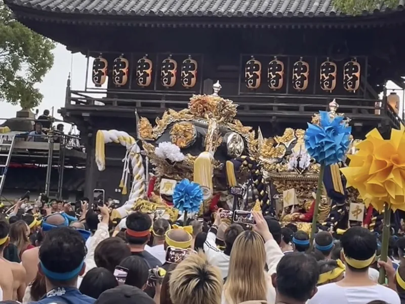
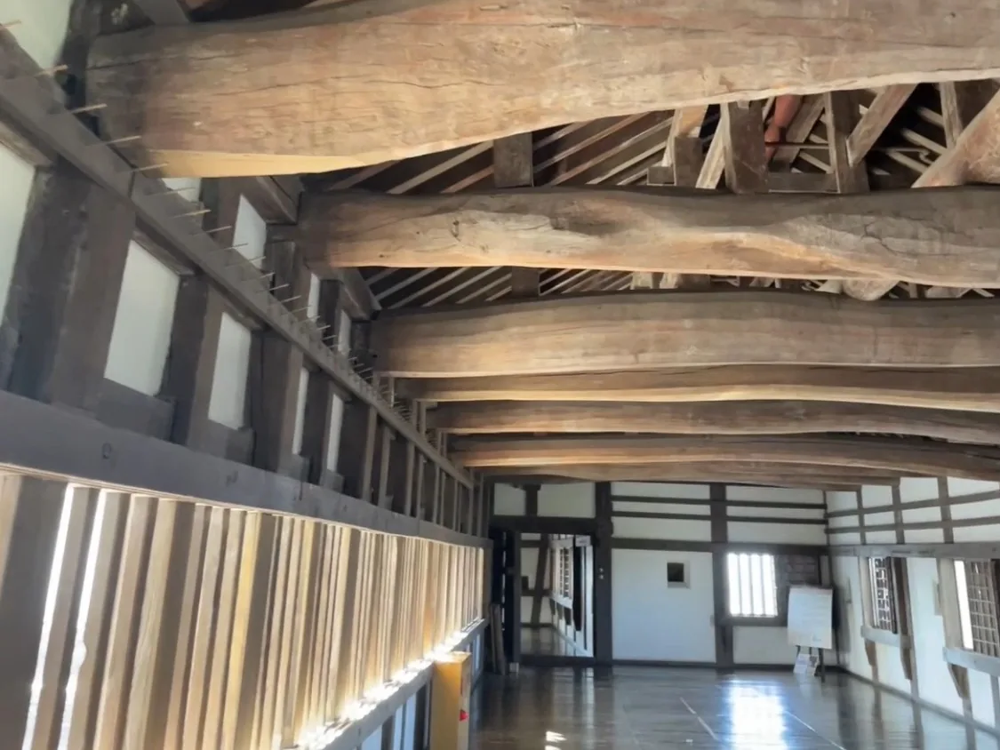
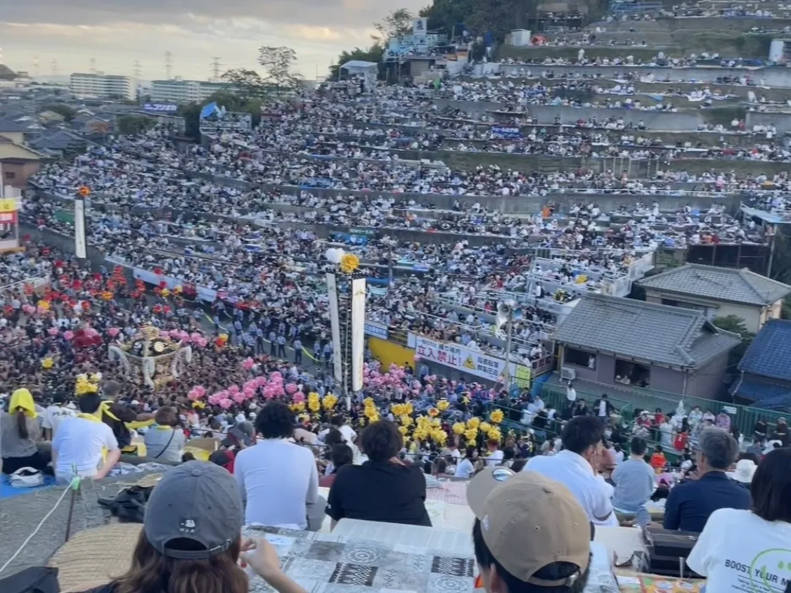
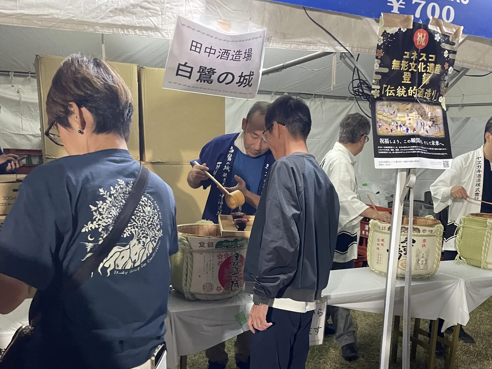
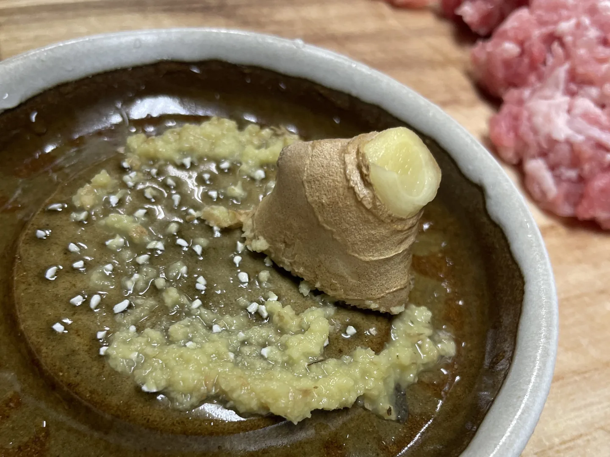
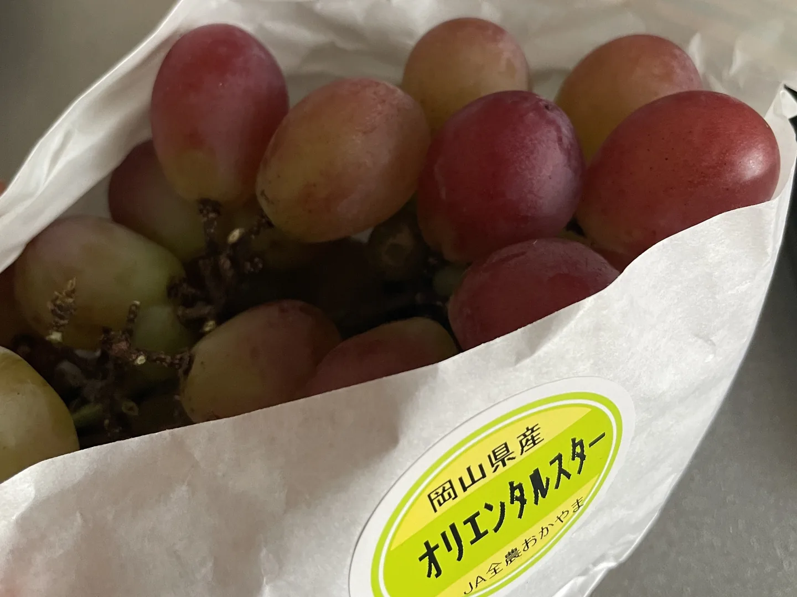

10月的姬路：打架祭典、賞月會與當令農產

2025 年秋天，我在姬路郊區的草莓觀光農場換宿一個月，除了去了姬路城、圓教寺這兩個經典景點，還參加了大大小小的祭典（秋天真的是祭典everywhere！），以及吃爆當季海鮮和水果。
姬路城：規模最大、結構最複雜的現存天守
日本目前的「現存天守」（江戶時代或更早以前保留至今、未遭戰火天災毀壞的原始天守閣）只剩 12 座，其中被指定為國寶的又只有 5 座——姬路城、松本城、犬山城、彥根城、松江城。姬路城不僅是其中之一，還是規模最大、結構最複雜的一座。
曾經被低價拍賣，差點被拆掉當建材，只因為拆除成本太高才逃過一劫，後來又躲過了戰火，我們現在看到的樣貌是 17 世紀初完成的，已經有 400 多年了。

以現代建築的概念來理解，城堡樓層間的高度像挑高一樣，四周還設有需要爬幾階樓梯上去的小平台，是用來監視、防禦的設計，樓層間的樓梯甚至有可以往地板方向關上的門。如果你也是對建築結構、樓梯這種細節會特別興奮的人，姬路城大概可以讓你逛到忘記時間。跟同樣是國寶城的彥根城、犬山城相比，姬路城的規模真的是完全不同等級。
- 參觀費用 2500 日圓／人，開放時間 9:00–17:00。

書寫山圓教寺：「西之比叡山」
圓教寺建於西元 966 年，是天台宗的別格本山。
因為和比叡山的深厚淵源，被稱為「西之比叡山」，地位和規模在關西地區都數一數二，也是觀音巡禮「西國三十三所」的第 27 番札所，還曾是電影《末代武士》的拍攝地點。
從搭纜車上山的風景開始，到園內漫步、參觀寺院建築，很適合放慢腳步走。我是平日午後前往，待了兩個小時，全程遇到不到 50 人，體驗非常清幽。
- 門票 500 日圓／人，纜車來回另收 1200 日圓／人，開放時間 8:30–18:00（冬季至 17:00）
天台宗：由平安時代的最澄大師於 9 世紀初創立，雖然源自中國天台山，卻在日本發展出「圓、密、禪、戒」四教合一的獨特體系，總本山是比叡山延曆寺。在現今日本,天台宗信徒人數雖然比不上淨土宗或真言宗,但鎌倉新佛教（淨土宗、淨土真宗、禪宗、日蓮宗……等）的開祖幾乎都出自比叡山，因此比叡山被視為跨宗派的「日本佛教母山」，在學術、文化與歷史上都有極高的地位。

灘之喧嘩祭：好幾萬人朝聖的「打架祭典」
松原八幡神社的秋季例大祭「灘之喧嘩祭（灘のけんか祭り）」，固定於每年的10/14–15舉辦，是我參加過的最大的祭典。日文「喧嘩」直譯就是「打架」，祭典的核心，就是抬著神轎和花車互相衝撞。
第一天：宵宮（前夜祭）
上午 11 點，七個村莊的花車（屋台）從各自村內出發遊行，再一起前往神社集合。下午的「練合（練り合わせ）」是當天高潮：先在神社樓門前廣場對撞，村莊之間較勁、展現威風；接著移到神社內對撞，則是表演給神明看的奉納儀式，把團結和力量當作供品獻上。最後在廣場進行總練合，就是「爽啦！(?)」的大亂鬥。

這些花車做工精緻，如藝術品般、造價高昂，因此所謂的對撞其實是點到為止、不會真的撞到的「紳士對撞」，會有指揮官吹哨舉旗，示意兩台花車分開，就像拳擊比賽裡把選手叫回角落一樣；準備開始對撞前，也會用兩塊木塊互敲發出清脆聲響，像是預告的「預預備～」。
＊各村莊抬的花車（或譯做山車），日文是「屋台（やたい）」，是向神明獻藝的移動舞台，裡面不坐神明，而是坐著 4 名負責敲太鼓、掌控節奏的人，稱為「乘子（のりこ）」，通常由 10~15 歲的男孩擔任，象徵村落的未來與純潔。祭典期間他們的腳不能碰到地面，全程都得有人抱著。
有坐神明的神轎，日文是「神輿（みこし）」。
第二天：本宮，「來真的！」的對撞
清晨 6 點，海邊會有淨身儀式，大約 6:20 結束，參與者是當天要負責抬神轎的人。神轎外型和花車相似但更樸素，裡面真的供奉著神明，分別是應神天皇、神功皇后、比咩大神，共三台（一之丸、二之丸、三之丸），而且神轎的對撞是真的會撞得木屑紛飛。

上午 11 點，神轎會先在神社前廣場和神社內進行第一輪對撞，這裡場地小，能近距離觀看，據說相當震撼。
下午 2 點，隊伍會移動到御旅山山腳的練場進行第二輪對撞，這個練場像巨型階梯一樣誇張，親眼看到才會理解資料提到的「好幾萬人參與」不是唬爛。
階梯上的野餐式座位是世襲的，一般遊客只能站到御旅山頂遠眺,把整個階梯看台上滿滿的人潮也一併收進視野裡，對遊客來說階梯的民眾也是看點。

傍晚 4 點左右，神轎與花車會一起爬上御旅山，最後的陡峭路段約 400~500 公尺，資料顯示神轎重量至少 300 公斤、花車則有 2 噸重，這最後一哩路對抬轎的人來說是體力的極限考驗。
＊祭典中有個專有動詞「練る」，意思是「高喊口號（比如「ヨーイヤサー」）、規律地搖晃神轎，充滿氣勢地大步前進」，抬轎前的預備動作會前後搖擺蓄力，除了物理上借力使力外，也帶著挑釁、威嚇對方的意味。
花車入庫：熱鬧之外的另一種莊重
如果祭典期間剛好路過神社附近，也有機會遇到花車收回專用倉庫（屋台蔵）的過程。整個過程氣氛隆重、仔細但不嚴肅——不是刺激的時刻，卻能感受到當地人對傳統的重視。
因為倉庫不大，無法直接把花車開(?)進去，所以在進到倉庫以前，會看到頂端洋蔥狀的金屬裝飾「擬宝珠」被摘下、其下方的木雕座「露盤」被人戴在頭上搬下樓梯。還有四角垂掛的巨型繩子「伊達綱」被拉緊固定。
擬宝珠（ぎぼし/ギボシ）：花車最尖端的金屬裝飾物。
露盤（ろばん）：位於擬宝珠下方的精緻木雕座，通常雕刻著退治惡龍、歷史豪傑或神話故事，重達20-30公斤。
伊達綱（だてづな）：在花車的四個角落垂掛著扭成麻花般的巨型繩子，是使用珍貴的錦絲、金線製作，尾端通常有華麗的金色流蘇。不僅是村落財力的象徵，也會藉由擺動得是否漂亮、有氣勢，來判斷花車抬得好不好。

中秋賞月與陶器市集：季節限定的姬路城周邊活動
姬路城觀月會（中秋節，農曆 15 日）是免費活動，姬路城會打上燈光、設有舞台表演，民眾可以自己在草皮找地方野餐。現場也有地酒攤位，買了一組「塑膠酒杯＋ 3 杯酒」700 日圓，走的是「自由心證」路線——自己拿著酒杯去攤位裝酒，攤位人員通常都會裝到滿，有看到日本人有拿著保鮮盒裝酒杯去裝酒，顯然有備而來。這是2025年的情況，不曉得是不是每年都差不多。

全國陶器市集（11 月上旬）辦在姬路城前的大手前公園廣場，各縣市的「○○燒」都會來擺攤，價格並不特別貴，比較偏大眾取向，小眾工作室的作品相對少一些，但能一次看到各種地方特色陶器，還是很值得逛，人潮不少，稍微人擠人。

姬路美食：當令農特產
瀨戶內海的秋日漁獲
姬路面向瀨戶內海，漁獲豐富，我都是在超市「ハローズ(Halows)」買的。
- 沙丁魚（真鰯）：連骨頭一起吃下去的小魚,在日本吃到的小魚料理很多都是這個。
- 紅舌鰨（赤舌ひらめ）：眼睛長在同一側，肉質細緻，簡單醬煮就非常好吃。
- 梭魚（カマス）：口感有點像吳郭魚但更軟一些，體型不寬但肉質厚實。
- 臭肚魚（バリ／アイゴ）：魚皮圓滑像沒有鱗片,要注意背鰭、臀鰭和腹鰭都有毒刺，處理起來需要小心。
- 秋刀魚：2025 年被稱為「十年一遇」的肥美年份，乾煎就很幸福。
- 白鯖蝦（シラサエビ）：很少在日本超市看到新鮮、帶頭、還在動的蝦子！
- 梭子蟹（渡り蟹）：不只便宜，也真的好吃的超推薦螃蟹代表，比我在日本海邊吃的松葉蟹還覺得好吃！大約 1000 日圓左右（看大小），遇到五折特價時便宜到哭出來，而且仍然新鮮，清蒸就很鮮甜，肉量也不少，大滿足！


秋天的水果與蔬菜
葡萄：姬路所在的兵庫西部，因地緣關係買到的葡萄多半來自岡山（日本產量最高、最知名的葡萄產地其實是山梨！）。我雖然吃了五六七八種，但最推薦的是隨處可見、帶有獨特香氣的「シャインマスカット（麝香葡萄）」，通常是綠色的，但我在農會超市「JA兵庫西旬彩蔵 書写」，買到偏淺綠甚至帶點粉紫漸層色的品種，比綠色款還要好吃，超神奇！
雖然吃了很多款但我也不是什麼大師，沒太多印象，有請大家自行採購購買～大抵上，綠色葡萄幾乎都可以連皮吃、大多都無籽。
＊我大部分都是在「產地直送フルベジポ」這間在地店家購入，當時有超過十種品種可以買，超多




{kind=link}
{kind=link}
{kind=link}
{kind=link}
{kind=link}
{kind=link}
- 柿子：柿子也是秋天的水果，尤其路邊長滿柿子、讓人產生邪惡的念頭的柿子樹超多，但後來遇到日本人告訴我「可以隨意摘哦～」，我才在一個看起來柿子樹不屬於任何人的地方摘摘看了，跟花錢買的一樣好吃哦！
最常見的是富有柿，也有筆柿，筆柿切開來內部是看起來很像壞掉的深橘色是正常的；如果遇到曬柿子的住家，多半是專門用來曬乾、不能直接生吃的澀柿品種（如「美濃柿／渋柿」），農會超市通常也會特別標註提醒。


- 栗子：日本常見的栗子是大顆的，有時會遇到考栗子的小攤販，貼著果肉的薄澀皮超難撥，日本人說可以連皮吃，不需要特地剝乾淨。
{kind=link}
{kind=link}
{kind=link}
結論
姬路城＋圓教寺一定要去，快閃的話一個上午一個下午（一個地點2~3小時）其實也辦得到，但我老人家了一天只能排一個行程。
如果剛好在 10 月中旬前往，強烈建議去觀賞「灘之喧嘩祭」，交通也很方便。
秋天真的是食慾之秋，不認真吃一下當令農特產對不起自己。
留言
電子郵件不會公開，只用來辨識留言者。第一次留言會先經過審核，之後同一個電子郵件的留言會直接顯示。本留言區以 Cloudflare Turnstile 防止垃圾留言。